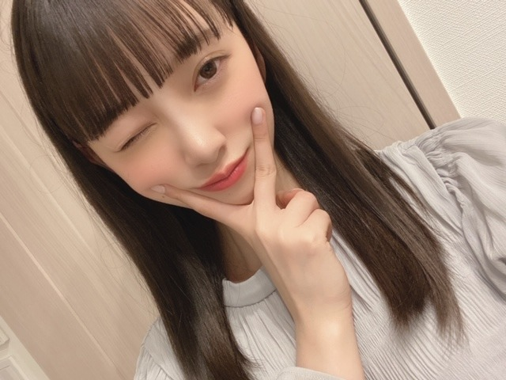
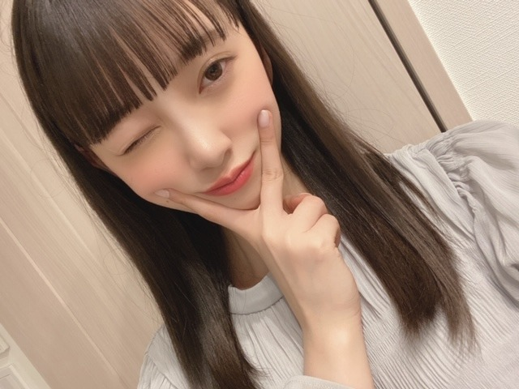

※本名ではなく、ペンネーム等での投稿をおすすめいたします。
※一度投稿したコメントは削除できませんのでご了承ください。
※「FAQ」によくあるご質問の回答を掲載させていただいておりますのでご確認ください。
1996年10月15日生血液型：O型星座：てんびん座身長：162cm>>プロフィールへ


 


コメント(375)
絵に描かれる人
未央奈ちゃんの出番は終わったかなぁ。
録画してあるので、帰ったら観ますね☆
おもろかった～！！ありがとうね。
でも、なんで 芸人？？？( ・◇・)？
堀ちゃんの絵個性的だけど…
俺は好きだけどな〜❤
おれも何か堀ちゃんに絵書いてほしいな〜
未央奈の描いた絵ある意味最高に素晴らしかったよ
ウチの父親も未央奈の作品に絶賛してたよ
アメトークに出演してくれてありがとう。
未央奈の髪型とベレー帽がとにかく可愛かった！
しかも絵も真面目に描いてるのにあんなに面白いなんて！笑
フリが丁寧はバナナマンさんのおかげもあるかな？
ライオンの絵が一番お気に入りです。
さすが画伯だねｗ
堀ちゃんお人形さんみたいにきれいで可愛いかったです！！！
なんか、お化粧の感じ？とかもすごいいいなあって思いました！
髪型も可愛いかった！！
そして絵、すごかったですね～
おつかれさまでした！
ラグビーのタックル姿の絵とライオンが輪っかを
くぐる絵がとても面白かった
中川家の礼二さんが未央奈ちゃんが描いた絵を
いじってる姿も面白かった
今回のストレートロングヘアーの未央奈ちゃんも
とても可愛い
いや～
カメラ目線でしたね～
意識しちゃってましたね（笑）
ちゃ～んと昨年のも残っていますよ！
今回も保存しとこ～～
風が吹くとちょっと冷えますよね。
暖かい分薄着だからなんですけどね。
最近、やっと花粉情報が出てきた気がします。
未央奈ちゃん三つ編みとピンクのベレー帽似合っててかわいい～
未央奈ちゃん大好き～
面白すぎて。
乃木坂ファンの中では知られる画伯としての未央奈が多くの人に知られると良いね！
絵を描くのは好きだけど上手に描けないのめっちゃ分かる！
自分の思った通りに描けないよね！
これからも応援してるよ！
体調管理に気をつけてガンバレ！
未央奈の絵のTシャツをグッズとして発売して欲しい！
アメトーークの絵心ない芸人、見たよ！
いろいろイジられていたね
なんか、僕もよく歩いているときに変なところで躓くんだけど、「これ、自分だけなのかー？？」ってずっと気になってた。
一段下がった段差のところでも、普通に歩いていていきなりガクン！！って足が落ちてびっくりする
なんだろねー？
歩くときの足の高さが低いのか？
兵隊さんが行進するみたいにビシッ！ビシッ！っと歩いたほうがいいのかな笑
なので、最近はよく足元に注意しながら歩くようになった(￣∇￣;)
本当に憧れの顔Ｎｏ．1です！大好き〜♡
アメトーク見たよ！
いきなり7時から堀ちゃん登場して嬉しかったな〜。
今日の絵も絶好調だったね
堀ちゃんの独特な絵、好きだよ。
三つ編み可愛かったです。
花粉症大変そう
自分なったことないんでわからないですけど
大変さはわかるつもりです。
今日もかわいいショットありがとう、インスタも見たよ〜。
ではははは〜（笑）
未央奈さんの絵、独特な絵心感の絵でしたね。笑
花粉症 大変ですね。
(^o^)
CRYSTALより。
良いことじゃん！
たくさん書いてれば、いつか上手くなるかも？
花粉症の人にとって暖かいのはいいんだけど
花粉がね…。
絵心ない芸人きたぁぁぁ！！
みたよー！
超おもろかった。たくさん笑ったわ。
みおちゃんの絵もピカソ風にしてTシャツにしてほしい！マエケンの描いた絵もすげぇかっこよくなってた！
かわいい！そのふわっとしてそうな服いいね！
髪サラサラ。☺️
さすが。
これからも絵を描く仕事がんばってください！
って、違うかぁっ。
お！未央奈ポーズじゃん！
かわいいのぅ。(^-^)
天気良いと日向ぼっこしたくなるよねー！
でも花粉がね。。わかる。
ヨーグルトで乗り越えるしか！
ではははっ
アメトーク観たよ！
自分も絵は苦手だけど、画伯の絵でたくさん笑えた！
面白かった♪
乃木坂には何人もの名画伯が居るからね。
その代表で未央奈ちゃんが出たんだもんね。
楽しませて頂きました！
★とし★
チャァオ～～!☆彡
最近は～～～⤴️⤴️
アニメのヤング ブラックジャックが見たいです❕❤️❤️❤️笑顔
声優の大塚明夫さんのしぶい声も好きなんです❕笑
オープニング曲も聴きたい❕笑顔
☆おすまし！より☆彡
レオナルドダヴィンチに限らず，洋風の画家が書いている雰囲気がすごいでてます！
特にラグビーのタックル！！ 俺もラグビーやってるから余計にツボだったよwww
でも白熱してワールドカップ見てくれていたと聞いてめっちゃうれしかったです！！！！
沢山笑わせてもらいました。これからも堀ちゃんから爆笑させられますね。www
面白かったです。
堀画伯健在で最高だったよ☺︎
花粉辛いよね、マスクある？大丈夫？
録画してるから後で見るよ～(゜゜)(。。)(゜゜)(。。)
体調に気を付けてね
んじゃね～！Σ⊂(ﾟДﾟ )
絵心ない芸人観ました
絵心ない芸能人でなく、絵心ない芸人って言うくくりから面白かった
さすが未央奈画伯は、才能溢れるセンスで沢山笑いました
あんなにメイク凄いのに、絵心とメイクは別物なんだと今日改めて知りました
けど、何事も完璧な人よりも魅力的だなとも思いました
では、花粉症も辛いと思いますが、頑張ってね
じゃぁ、またね
未央奈
かわいい
これからも応援していきます
アメトーク見ました。安定の出来映えでしたね。
そういう感覚が、偉大な芸術家を生み出したんだろうね。ただ、正直言って、僕にはついていけないレベルです。
どちらかといえば、印象派や写実派が好きなものですから。
でも、また見てみたいので、こういった企画には出て下さいね。
絶対にリアルタイムで観るよ！
録画予約もバッチリしてるよ！
最近は綺麗系の未央ちゃんが多かったから、久し振りに可愛さ全開の未央ちゃんを見れて良かったよ。
もっとケンコバが話振ってくれれば、よかったなぁ。
連日のブログ更新ありがとうございます。
「アメトーク」、もちろん見ましたよ。今回も抜群の存在感、ありがとうございます。楽しく見せていただきました。陸上部とか前振りもなかなかで、褒められていましたね。
ベレー帽子姿もかわいかったし、大リーガーのあの前ケンさんらと共演というのも何よりでしたね。
次回は生ちゃん・たまちゃんの３画伯とかっきーの４人での出場をお願いしますね。
急に、春らしくなってきました。それもそのはず、今日はお彼岸でした。花粉症も大変ですが、体調管理には気をつけてくださいね。
次週ラスト「レコメン」もちろん聞きますよ。
コメントする